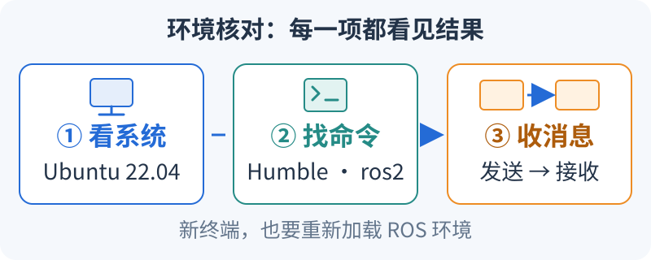

开始 ROS2 前，先核对环境三件事（S0）
整理与维护：24cst朱鑫鹏
按图从左向右检查：系统对得上，终端找得到 ROS，两个官方节点能通信。 本页命令使用 Ubuntu 22.04 的 Bash 终端。

跟图核对：每一项都有结果（约5分钟）
- 看系统：执行
cat /etc/os-release，找到 Ubuntu 和22.04。把版本写进自己的环境记录。 - 看当前终端：执行
source /opt/ros/humble/setup.bash，再执行echo "$ROS_DISTRO"和command -v ros2；应看到humble和一个ros2路径。 - 看双终端通信：第一个终端运行
ros2 run demo_nodes_cpp talker；另开终端，重新执行上一步的source，再运行ros2 run demo_nodes_py listener。观察接收数字是否持续增长。
预期：记录中有系统版本、ROS 发行版与路径、几行递增的接收输出。找不到 setup.bash 或 ros2 时，先按第1节的官方安装入口补齐，再开新终端核对。
通过后再继续：第2节创建自己的小包，第3节检查本队工程；每一步都确认“终端实际找到哪一份包”。
真正打开终端时，用什么环境？
原课程：S0：环境与工程基础。
目标：在普通开发机建立最小可工作的 ROS2 环境，并能读懂项目如何构建。前置：会安装软件和打开终端。本页命令面向 Ubuntu 22.04 / ROS2 Humble / Bash，不是 Windows PowerShell 命令。Windows 可用虚拟机完成基础课；网口雷达、串口、Gazebo 图形性能和 DDS 跨机发现需要在队伍批准的 Linux 环境单独验证。
1. 先建立最小环境
先把开发环境看成三层：操作系统提供进程、文件和网络；ROS2 提供消息通信和运行工具；工作区放我们自己的包。安装 ROS 并不会让终端自动知道所有个人工程，后面的 source 就是在当前终端加载“到哪里找包、程序和库”的信息。它影响这个 shell 及其启动的子进程，新开的终端需要重新加载。
第一次让 talker 和 listener 通信，是为了把问题缩到最小：两个官方节点都不需要地图、雷达或电机。如果这一对都不通，先处理环境、发现域和网络；如果这一对能通而导航节点不能通，再看导航包和具体接口。这样的先后顺序能减少一次排查里同时出现的未知量。
沿用Linux 基础、配套练习、SSH与Git。原 Ubuntu 安装占位页已转为本课入口；准确安装步骤见下方官方版本文档。
ROS 安装按官方 Humble 安装文档进行，若网页无法访问可读官方 Humble 文档源码。操作系统、软件源和依赖版本以安装日官方说明为准；不混装其他 ROS 发行版来绕过错误。
安装完成后，在新终端检查：
cat /etc/os-release
source /opt/ros/humble/setup.bash
echo "$ROS_DISTRO"
command -v ros2
ros2 --help
ros2 pkg prefix demo_nodes_cpp
ros2 run demo_nodes_cpp talker
另开终端，同样 source 后执行 ros2 run demo_nodes_py listener，应持续收到递增数据。ROS2 CLI 不应靠 ros2 --version 判断发行版；看 ROS_DISTRO、包版本和环境报告。需要完整报告时使用已安装的 ros2 doctor --report。
2. 小工作区先于完整比赛工程
colcon 负责按依赖顺序组织多个包的构建；每个 C++ 包内部通常再由 CMake 负责“编译哪些源文件、链接哪些库、把结果安装到哪”。源码能编译和程序能被 ROS 找到是两步，所以构建完还需要安装和加载环境。目录作用与 Humble 的 colcon 教程一致：
| 目录 | 白话解释 | 遇到问题去哪里看 |
|---|---|---|
src/ |
自己维护的配方和原料 | 改源文件、依赖声明、配置 |
build/ |
编译过程中产生的中间结果 | 第一处编译或链接错误 |
install/ |
给运行工具查找的已安装结果 | launch 实际读取的文件、可执行入口、包来源 |
log/ |
这次构建发生了什么的记录 | 保存失败命令和日志以供复现 |
例如，源码中的 rate_hz 已改成 5，而运行仍是 10，可能是启动了另一工作区安装的同名包，也可能参数被 launch 覆盖。--symlink-install 会对支持的资源使用符号链接以方便开发，不能据此保证所有文件修改都立即生效；先用 ros2 pkg prefix 找到当前包，再检查安装文件和最终参数。
安装开发工具后创建自己的练习包：
sudo apt install build-essential cmake git python3-colcon-common-extensions python3-rosdep
mkdir -p ~/nav_training_ws/src
cd ~/nav_training_ws/src
ros2 pkg create --build-type ament_cmake nav_training --dependencies rclcpp std_msgs
cd ~/nav_training_ws
colcon build --symlink-install --packages-select nav_training
source install/setup.bash
ros2 pkg prefix nav_training
此时是空包骨架，T1 再添加可运行节点。能说明 src、build、install、log 的作用；source /opt/ros/humble/setup.bash 是基础环境，source install/setup.bash 是本工作区 overlay。修改参数文件后既要确认源文件，也要确认 launch 实际读取的安装路径。
3. 获取并检查本队工程
这里的 Git commit 可以理解为这次实验的“配方编号”。今天和同伴拿着不同编号的源码，即使运行同一条命令，也可能得到不同节点、参数和结果。记录 git rev-parse HEAD 加 git status --short，分别说明基线版本和有没有额外未提交改动；只写“最新版”无法让别人重复你的实验。
mkdir -p ~/projects
cd ~/projects
git clone https://github.com/Navigator-Vision-Algorithm-Team/Navigation-2027.git
cd Navigation-2027
git rev-parse HEAD
git status --short
git submodule status --recursive
cd ros_ws
colcon list
记录实际 commit，并与审查基线比较。新人练习用自己的分支；不要把生产机器拉到最新主分支来试错。colcon list 只证明包能被发现，不证明依赖完整或能编译。
初始化 rosdep 数据库只需由环境维护者执行一次 sudo rosdep init；之后普通用户执行 rosdep update。在工作区使用：
rosdep check --from-paths src --ignore-src --rosdistro humble
rosdep install --from-paths src --ignore-src --rosdistro humble -y
这只覆盖已声明且有规则的依赖。未解析的键、源码库和模型资源必须记录，不使用一长串 --skip-keys 将错误隐藏。环境齐备后才尝试 colcon build --symlink-install --packages-up-to pb2025_nav_bringup，保留第一处失败日志；完成后 source 安装目录，用 ros2 pkg prefix pb2025_nav_bringup 确认包来源。这是一条构建检查路径，本次未在 ROS 环境验证可成功构建。
4. 当前代码不能当作开箱即用教学包
| 静态审查事项 | 新人应做的检查 | 负责人需要补齐 |
|---|---|---|
README 要求 rm_serial_driver，当前导航树中未找到该包 |
colcon list 和 ros2 pkg prefix rm_serial_driver；确认来自哪个 overlay |
实际自瞄/串口仓库 commit、启动命令、消息协议与 Topic |
根目录还有 small_gicp、standard_robot_pp_ros2-main 等，不能假设 ros_ws/src 会自动发现 |
查看目录、CMake 查找和实际安装来源 | 按各依赖文档建立单独可复现安装步骤；不能把不同串口实现随意互换 |
| 默认 world 与 README 示例不保证有完整地图 | 同时检查 YAML、图像、PCD 的真实路径和坐标关系 | 一套有版本、校验值、采集说明的地图包 |
| 已有仿真包，但有外部模型/PCD/版本依赖 | 阅读仿真章节 | 由老成员维护统一环境，避免新人各自搭一套 |
| reality YAML 与最终参数存在 launch 替换 | 用 --show-args、ros2 param dump 和包来源比较 |
发布一份实际运行命令及有效参数快照 |
基础学习不要因完整比赛工程的缺包而停住。继续 T0–T2、A* 和静态源码追踪，待训练材料齐备再做完整链路。
5. 编程只学本周用得到的部分
读一个包时，先读“身份证”和“启动入口”，再进算法。package.xml 声明包和依赖，构建文件决定如何安装，launch 组合节点并传参数，最后才是回调中的处理。可以先用现成 Python 教学包练这个顺序，避开一开始就被长篇 C++ 滤波实现淹没：
- 路径
training/ros2_ws/src/nav_training/package.xml：依赖声明。找消息包和构建类型；依赖声明不是安装成功的证明。 - 路径
training/ros2_ws/src/nav_training/setup.py：安装资源与 console_scripts。sequence_publisher = nav_training.sequence:publisher_main把运行名连到 Python 模块中的函数，不是要你寻找一个同名.py文件。 - 路径
training/ros2_ws/src/nav_training/nav_training/presets.py：节点和参数的组合。追踪rate_hz如何从启动参数变成浮点节点参数。 - 路径
training/ros2_ws/src/nav_training/nav_training/sequence.py：定时器与回调。找到读取频率、建立定时器、发送消息三步，并解释1.0 / rate的单位是秒。
若设为 5 Hz，目标周期就是 1/5=0.2 s，理想情况下 2 秒约触发 10 次。实际调度和观察窗口会影响计数，因此记录窗口和测得频率，再解释偏差，不能只对照屏幕上有没有 10。
具体章节、预计投入、停止条件与带数值答案的小练习见基础自学手册 F1–F6。按周任务单逐步补齐，不要求先刷完整套 C++ 或 Python 课程。
| 能力 | 必须能做的事 | 对应代码阅读 |
|---|---|---|
| C++ | 读懂类、构造函数、引用、容器、智能指针、lambda/std::bind、回调；知道对象生命周期 | loam_interface.cpp 的订阅、发布和 TF 查询 |
| CMake | 添加 executable、ament 依赖、install 目标，说明头文件与库链接错误 | 小练习包→真实 package.xml/CMakeLists.txt |
| Python | 读参数、函数、类和脚本入口，不必先学完整语言课程 | reality launch 的参数与 IncludeLaunchDescription |
| Git | diff→分支→commit→push→PR；冲突时保留双方意图；用 revert 回退已共享提交 | 一项文档修订或隔离实验配置修改 |
| 工程观察 | 读第一条编译错误、保存命令、定位包来源、查看日志/CPU/内存/磁盘 | 后续所有任务 |
验收与常见错误
完成 T0：同伴在新终端按 README 能复现；提交不包含 build/install/log、密钥或大 bag；能解释一次 source/包来源错误。常见失败是打开新终端未 source、在错误目录编译、混用多个工作区、改了源码配置但运行另一份安装。先确认这些，再处理算法问题。
下一步：S1–S2 ROS2、TF、时间与运动。
需要一套现成可运行的小系统时，使用配套教学工作区。它的包名也为 nav_training，采用 ament_python；与本页自建 C++ 练习包使用不同工作区和终端，不同时叠加 source。